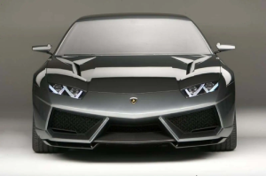

|  |
Lamborghini Estoque
|
The Lamborghini Estoque is a concept car that was first unveiled at the 2008 Paris Motor Show. It is a four-door supercar that was designed to showcase Lamborghini's ability to produce high-performance vehicles that are also practical and functional for everyday use.
The Estoque features a front-engine layout and is powered by a 5.2-liter V10 engine, which produces 560 horsepower and 398 lb-ft of torque. The car is mated to a six-speed automatic transmission and Lamborghini's all-wheel-drive system, providing excellent traction and handling in all driving conditions.
The exterior design of the Estoque is characterized by sharp, angular lines and a low, aggressive stance. The car features a long hood and a short rear deck, giving it a classic sports car silhouette. The interior is designed to be both luxurious and comfortable, with premium leather and Alcantara materials throughout the cabin.
One of the most notable features of the Estoque is its four-door layout, which makes it more practical and functional than many other high-performance supercars. Despite its larger size, the Estoque is still able to deliver excellent performance, with a top speed of 200 mph and a 0-60 mph time of just 4.5 seconds.
While the Lamborghini Estoque was originally conceived as a concept car and was never intended for production, it represented a significant departure from Lamborghini's traditional two-door supercar designs. It showcased the brand's ability to innovate and adapt to changing consumer needs and preferences, while still maintaining its commitment to high-performance and luxury.